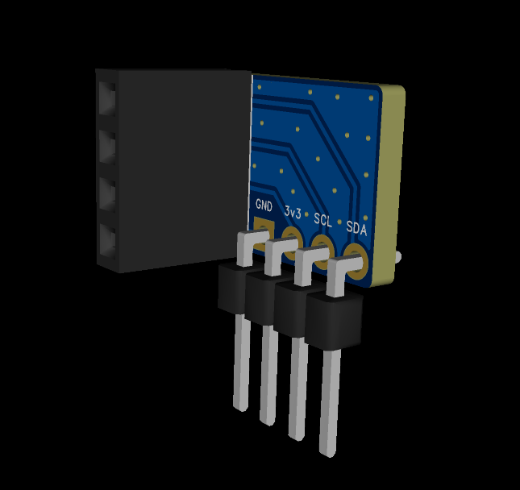
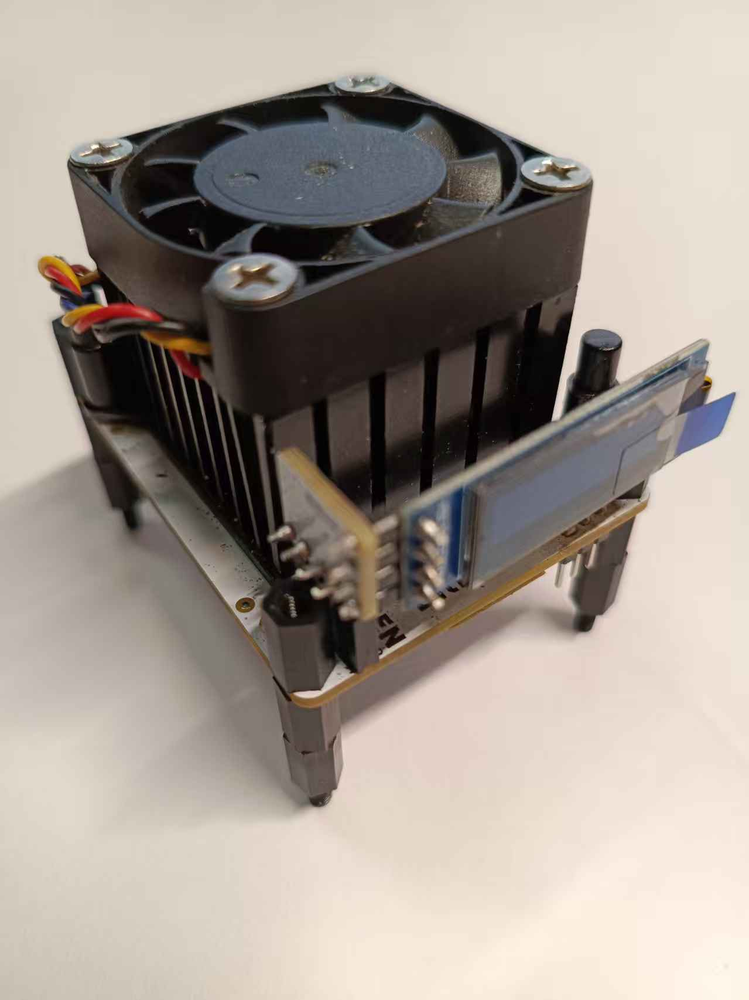

Documentation
User guides, API reference, tutorials and board files. Everything the original site hosted, kept online.
Looking for step-by-step tutorials? The guides section covers antenna install, pool forwarding, frequency tuning and hotspot recovery.
U Touch Series
Document
| Doc Name | Link |
|---|---|
| Api Doc | Link |
| [EN]Solution for Fixing Inability to Access the Backend Due to Incorrect Static IP Configuration | Link |
| [EN]How to change the running frequency of bitdsk? | Link |
| [EN]How to use redir for mining pool forwarding? | Link |
| [EN]ESP32 How to install an antenna? | Link |
| Doc Name | Description | Version | Down |
|---|---|---|---|
| EN.bitdsk_All_doc_2.0.pdf | All Series User Guide | Download | |
| 中文.bitdsk_All_doc_2.0.pdf | All固件使用指南 | Download | |
| EN.bitdsk_All_doc_1.0.pdf | All Series User Guide | First edition | Download |
| 中文.bitdsk_All_doc_1.0.pdf | All固件使用指南 | First edition | Download |
| EN.bitdsk_N_doc.pdf | N Series User Guide | First edition | Download |
| EN.bitdsk_D_doc.pdf | D Series User Guide | First edition | Download |
| 中文.bitdsk_N_doc.pdf | N系列使用指南 | Revised 2nd edition | Download |
| 中文.bitdsk_D_doc.pdf | D系列使用指南 | First edition | Download |
Download
| – | Description | Down |
|---|---|---|
  | The screen transfer PCB can stand up the small screen.You need to prepare 4-pin angled plugs with a 2.54mm spacing.You need to remove the 4-pin plug that comes with the screen and replace it with a 4-pin curved plug. | Gerber |